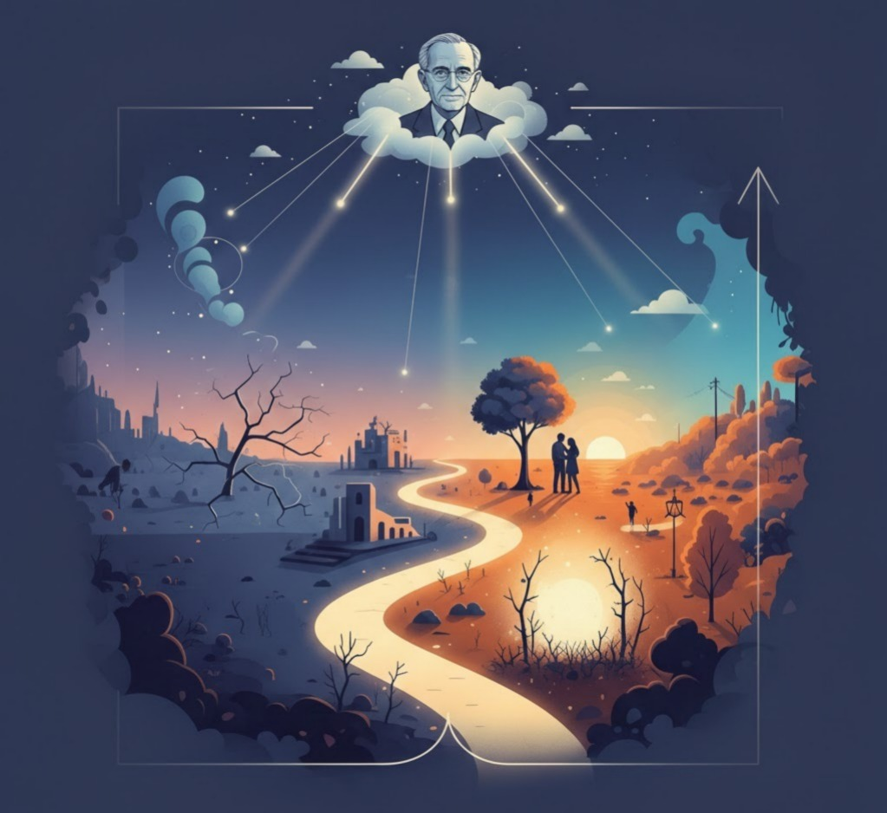
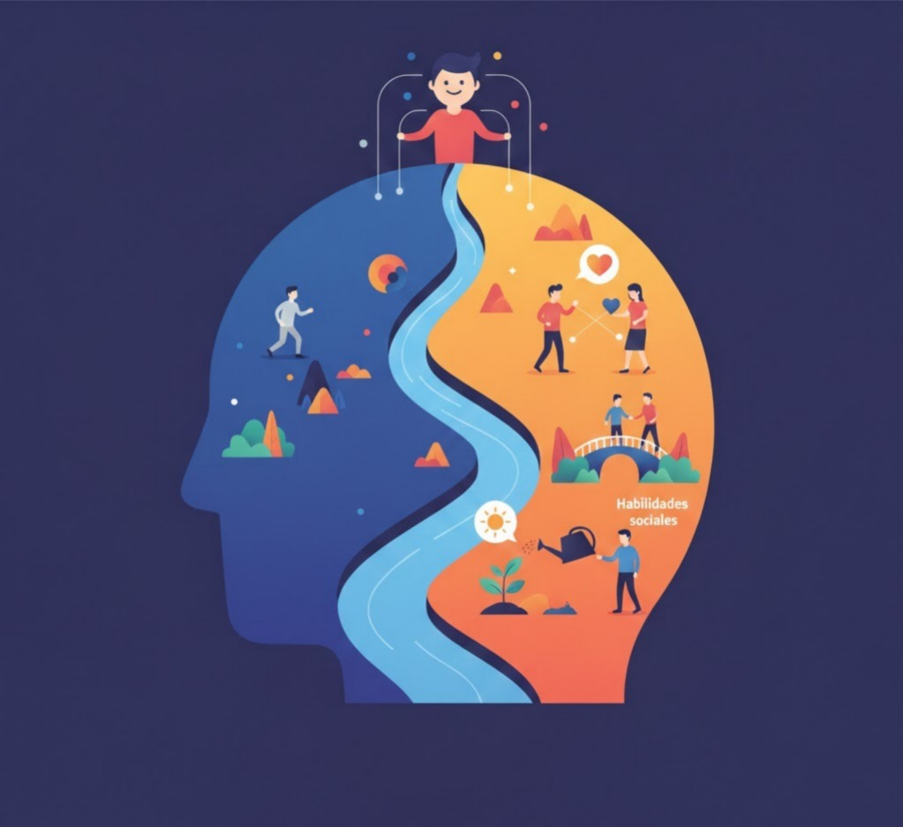

10 artículos de divulgación sobre psicología, salud mental, bienestar emocional y espiritualidad terapéutica para acompañar procesos de transformación personal.

Sentido, libertad y responsabilidad en la experiencia humana
Desarrollada por Viktor Frankl —sobreviviente del Holocausto— la logoterapia sostiene que la motivación primaria del ser humano no es el placer ni el poder, sino la búsqueda de sentido. Cuando ese sentido se frustra, emerge el «vacío existencial»: apatía, desesperanza o conductas compulsivas que encubren una crisis de significado.
Frankl identificó tres vías para encontrar sentido: valores de creación, de experiencia y de actitud. Incluso en el dolor, el ser humano puede elegir su respuesta.

Un camino hacia la madurez personal y relacional
Las emociones no son obstáculos para la razón; son señales que contienen información valiosa sobre necesidades, valores y límites. Desarrollar inteligencia emocional comienza por cambiar nuestra actitud hacia ellas.
Comprensión clínica, causas y caminos de recuperación
El TLP se caracteriza por inestabilidad emocional intensa, impulsividad e identidad difusa. Esta hipersensibilidad no es manipulación, sino una experiencia real que desborda los mecanismos internos de regulación.
Comprensión clínica, tipos y abordaje integral
El trastorno bipolar implica oscilaciones entre episodios de exaltación y depresión profunda. No son simples cambios de humor, sino alteraciones profundas que afectan el pensamiento, la energía y la funcionalidad.
Comprender el apego patológico y recuperar la autonomía afectiva
La dependencia emocional es un patrón persistente de necesidades afectivas que se intentan cubrir de forma desproporcionada a través de otra persona. Miedo al abandono, idealización y necesidad constante de aprobación.
Evolución del concepto y comprensión clínica actual
La psiquiatría actual adopta un enfoque dimensional más flexible, describiendo síntomas positivos, negativos y cognitivos en lugar de subtipos rígidos. La detección temprana mejora significativamente el pronóstico.
Fundamentos, métodos y beneficios para la salud integral
El estrés crónico activa permanentemente la respuesta de lucha o huida. Las técnicas de relajación interrumpen ese ciclo enviando señales de seguridad al cerebro y activando el sistema nervioso parasimpático.
Guía integral para construir propósito y dirección
Un proyecto de vida no es una lista de metas aisladas, sino la integración de valores, talentos y responsabilidades en una visión coherente. Sin dirección clara, muchas personas viven reaccionando en lugar de eligiendo.
Comprender el proceso para prevenir la recaída conductual
La recaída no ocurre de forma repentina. Es un proceso progresivo que comienza mucho antes del consumo. La recaída emocional es la primera y más silenciosa fase, peligrosa precisamente porque no genera alarma.
Dimensión espiritual y transformación interior en la recuperación
El Poder Superior no se impone como figura religiosa específica. Puede ser Dios, la fuerza del grupo, el amor o el potencial más elevado del propio ser. Lo esencial es confiar en algo mayor que el ego individual.